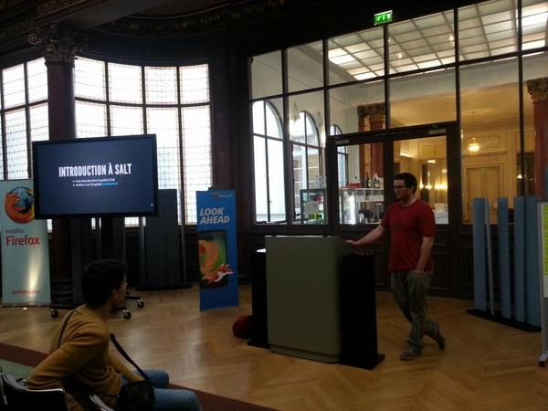
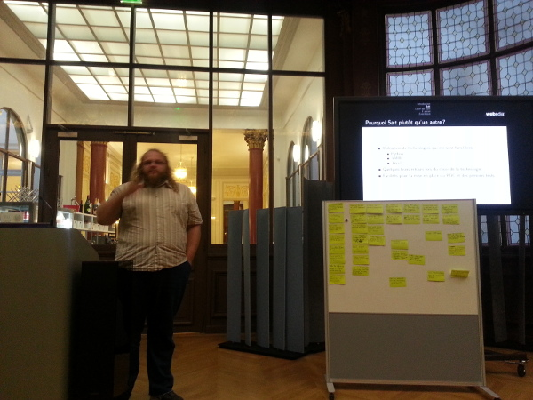
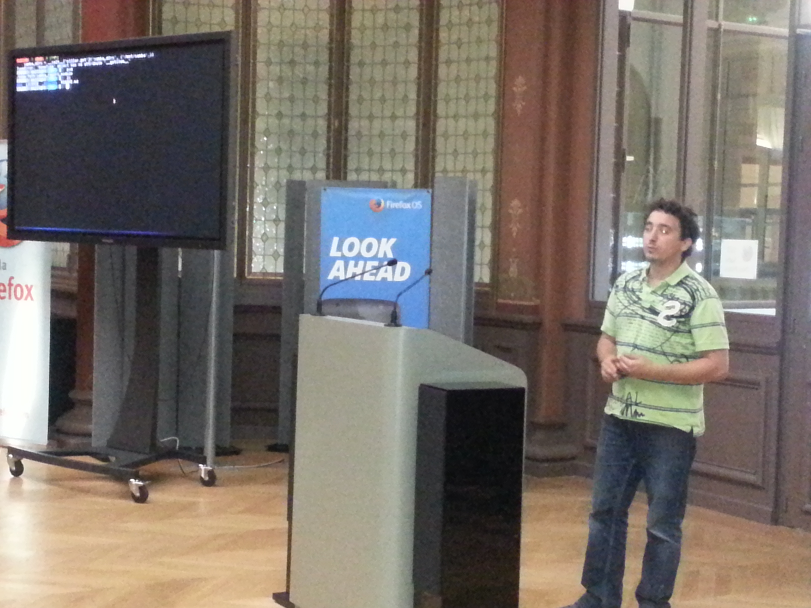
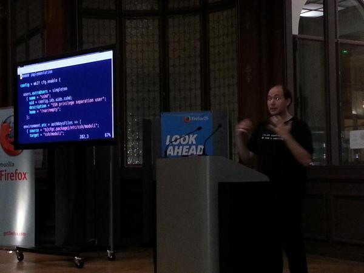
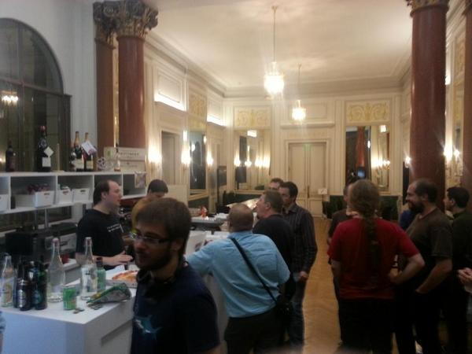

Pour ce 4ème meetup parisien des utilisateurs de Salt, nous étions acceuilli dans le luxe des locaux de Mozilla Paris, merci à eux!
Pour la partie du public qui découvrait salt, Arthur Lutz de Logilab a fait une introduction à Salt.
Cyril Lavier nous à présenté l'utilisation de Salt chez Webedia. Voici les slides : /presentations/webedia-salt.pdf.
Paul Tonelli nous a présenté une utilisation de la mine salt pour gérer des fichier de zone automatiquement avec salt. Voici les slides: http://docs.logilab.org/salt_dns/
Feth Arezki de Majerti a présenté samba_report_module qui produit du json utilisé par le projet samba_report_html.
Nicolas Pierron nous a montré une autre facon de penser la gestion de configuration en nous présentant la distribution linux NixOS.
Forcément, nous avons fini la soirée autour d'une pizza payée par Logilab et quelques boissons fournies par Mozilla. Merci à eux !
Pour les prochains meetups n'oubliez pas le document collaboratif d'organisation sur lequel vous pouvez faire des propositions de présentations. Vous pouvez aussi voter pour la date du meetup de novembre 2014.
Go Top